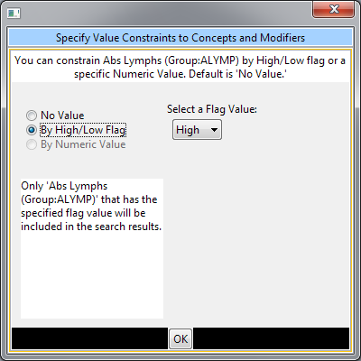
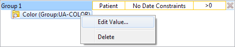
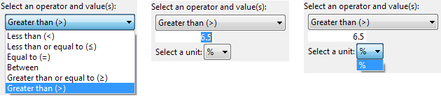

Value Constraint
Value constraints can be associated with concept and modifiers but not all of them will have values. For instance, the diagnosis of Acute Myocardial Infarction does not have a value but the tests used to make the diagnosis do have values (high/ low flags, or numeric values, etc.).
Flag Value
Flags are defined in the source system when the value is entered. The following are some examples that can be found in the i2b2 Demo database.
· High
· Low
· Abnormal
Setting the Value Constraint (Flag)
|
|
NOTE: |
|
|
|
The value constraint window will open automatically when you drop a concept into a Group Panel. This will only happen if the concept is setup to support values in the database with XML metadata. The first three steps can be used if you did not add a value constraint when you added the item to the panel or if you wish to edit an existing item. |
|
1. Using the right mouse button, click on the item in the panel.
2. A pop-up menu will open.

3. Select Set Value from the list.
4. The Value Editor will open.

5. Click the radial dial next to By high/low flag.
6. A new field with a drop-down selection box will appear.

7. Click on the drop-down arrow to change the selection or accept the default.
8. Click on the OK button.
9. The value constraint entered will now appear next to the item in the panel.

Text Value
The text is defined in the source system when the value is entered. The following are some examples that can be found in the i2b2 Demo database.
· Test Not Performed
· Borderline
· Positive
Setting the Value Constraint (Text)
|
|
NOTE: |
|
|
|
The value constraint window will open automatically when you drop a concept into a Group Panel. This will only happen if the concept is setup to support values in the database with XML metadata. The first three steps can be used if you did not add a value constraint when you added the item to the panel or if you wish to edit an existing item. |
|
1. Using the right mouse button, click on the item in the panel.
2. A pop-up menu will open.

3. Select Set Value from the list.
4. A new window will open.
5. Click the radial dial next to By text value.
6. A new field listing the enumerated values will display.
7. Click on the check box next to the values you want to include.

8. Click on the OK button.
9. The value constraint entered will now appear next to the item in the panel.

Numeric Value
The numeric value is defined in the source system when the result is entered. The following are some example formats that can be found in the i2b2 Demo database.
· 200
· 1.3
Unlike flag and text values, numeric values use operators, such as greater than or less than when setting the constraints. The following is a listing of operators currently in use.
|
Operator |
Description / Use |
|
Less Than (<) |
Any value less than the number entered. |
|
Less Than or Equal To (<=) |
Any value less than or equal to the number entered (inclusive). |
|
Equal To (=) |
An exact match to the number entered. |
|
Between |
Any value in the range of numbers entered. |
|
Greater Than (>) |
Any value greater than the number entered. |
|
Greater Than or Equal To (>=) |
Any value greater than or equal to the number entered (inclusive). |
Setting the Value Constraint (Numeric)
|
|
NOTE: |
|
|
|
The value constraint window will open automatically when you drop a concept into a Group Panel. This will only happen if the concept is setup to support values in the database with XML metadata. The first three steps can be used if you did not add a value constraint when you added the item to the panel or if you wish to edit an existing item. |
|
1. Using the right mouse button, click on the item in the panel.
2. A pop-up menu will open.

3. Select Set Value from the list.
4. A new window will open.
5. Click the radial dial next to By numeric value.
6. Two new fields will appear; one with a drop down selection box and the other a text box.

7. Click on the drop-down arrow to change the operator or accept the default.
8. Enter a numerical value and choose the appropriate unit:

9. Click on the OK button.
10. The value constraint entered will now appear next to the item in the panel.

Using Units In Value Constraints
Units in regards to i2b2 are the standard units of measurement associated with a value. For instance, a medication may have “mg” listed as the unit for the dose, while a Hgb lab test may have “gm/dL”.
The units are defined in the source system and although it is recommended that all numerical facts are stored in normalized units it is recognized that this is not always feasible. Therefore, the workbench has the ability to convert the units when running a query.
In order for this feature to work a parameter called CRC_ENABLE_UNITCD_CONVERSION must be defined for the project. If this is not defined you need to contact your system administrator.